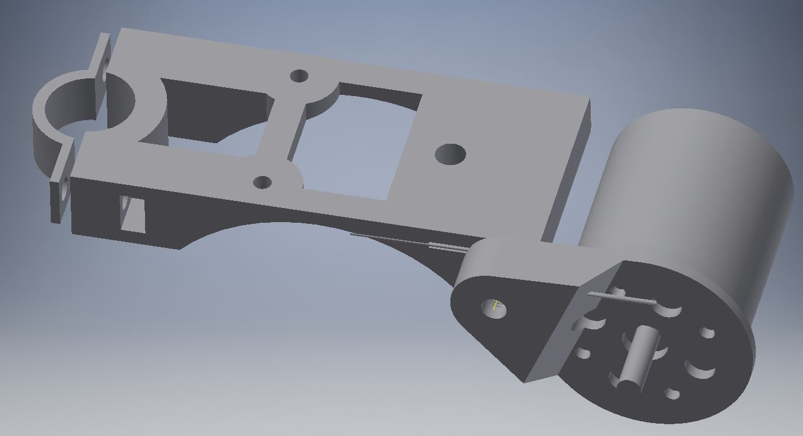
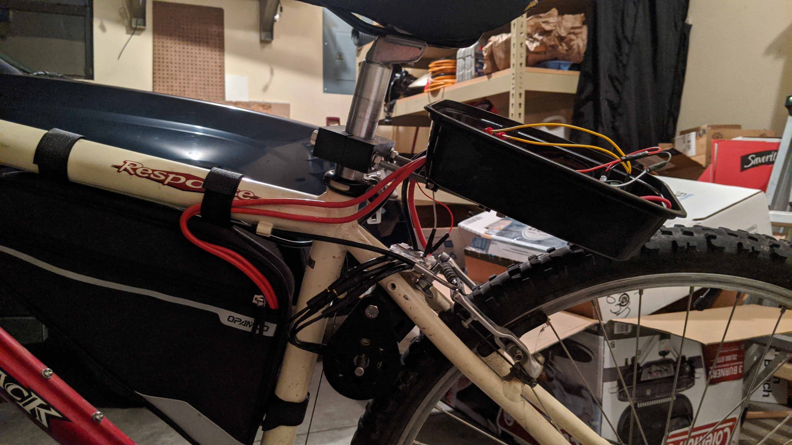

Created: May 2020
I wanted to create an electric bike so I could go fast. I enjoy biking as it is but felt like it could be better if I had some help on the hills and could coast easily on the flats. For this project there were two main goals:
| Date | Description | Qty | Price Per | Total | Link |
|---|---|---|---|---|---|
| 4/29/2020 | Torque ESC BLDC Electronic Speed Controller | 1 | $95.00 | $105.00 | Link - diyelectricskateboard.com |
| 5/13/2020 | Turnigy 5000mAh 3S 20C Lipo Pack w/XT-60 | 4 | $25.74 | $102.96 | Link - hobbyking.com |
| 5/13/2020 | Turnigy Aerodrive SK3 - 6374-149KV Brushless Outrunner Motor | 1 | $85.81 | $85.81 | Link - hobbyking.com |
| 5/13/2020 | Genuine XT60 Nylon Connectors Male/Female (5 pairs) | 1 | $3.41 | $3.41 | Link - hobbyking.com |
| 5/15/2020 | Zeee Lipo Safe Bag Fireproof Explosionproof Bag Large Capacity Lipo Battery Storage Guard Safe Pouch for Charge & Storage(8.46 x 6.5 x 5.71 in ) | 1 | $12.99 | $12.99 | Link - amazon.com |
| 5/28/2020 | 48 Volt 80 Amp Bosch Type SPDT Relay | 1 | $5.95 | $5.95 | Link - electricscooterparts.com |
| 5/28/2020 | 70 Amp Electric Scooter/Bike Circuit Breaker | 1 | $11.95 | $11.95 | Link - electricscooterparts.com |
| 6/25/2020 | Speed Control Thumb Throttle Grip for Scooter Ebike Electric Bicycle with OnOff Button and Battery Power Indicator Bar | 1 | $18.95 | $18.95 | Link - amazon.com |
| 7/14/2020 | Bike Bicycle Triangle Frame Bag - Bike Bicycle Storage Bag Pack Bike Accessories Road Mountain Cycling Saddle Pouch Bag | 1 | $17.99 | $17.99 | Link - amazon.com |
| Total | $372.20 | ||||
Back in April of 2020 I had the first idea for my electric bike. I was thinking that I could drive the sprocket where the pedals were and still be able to use the gears to change the speed and torque ratio for what I need. However, I realized that this would take away the pedals and also the gear ratio would be wrong. Electric motors spin very fast and need to be geared down to gain more torque. Bicycles are geared for the high torque and low speed of the persons legs and need to be geared up for more speed when needed.
After watching Tom Stattons video of his electric bike, I decided that I would use a design similar to his but my motor would sit inside the middle frame of the bike instead of sticking outside the bike like his original design. I printed the large pulley and began searching for a belt long enough to reach from the rear wheel to the inside of the frame where the motor would sit which made the belt almost 1400mm in circumference. I quickly found that a belt that long was very hard to find and could cost upwards of $60. It was also very difficult to find a small pulley with 10 or less teeth. I did purchase a small pulley on Amazon but I did not read the description close enough because it was too small for the belt I was planning on buying.
Once I decided that a pulley driven system would be too expensive, I began looking into friction drive systems. One article I read had the clever idea of using the motor itself as the drive wheel against the tire since the motor is an outrunner. In an outrunner motor, the outer shell spins while the inner structure remains stationary. I was also introduced to the idea of using a spring to hold the motor off of the wheel so that the wheel does not drive the motor and back power the ESC. Once the motor is activated, the centripetal force drives the motor towards the wheel, engaging the tire and driving it.
With these main ideas I began designing the first version of the motor mount. It is designed to attach to the bike seat post and then a threaded rod would support the other end through a hole in the bike frame.
However, once printed and put on the bike, I found that it was too short.
Since measuring hole locations and angles of things is very difficult to do on a bike, I decided to modify the design to be more adaptable as I install it. To achieve this, I used threaded rods to make the middle section adjustable. This design worked very well. I could tighten all of the nuts and none of the pieces moved.
You'll just have to imagine the threaded rods in the model.
At the heart of the electronics for this project is a VESC (Vedder Electronic Speed Controller). A VESC is an advanced ESC that has many more features for motor and battery protection as well as controlling the motor. The other big part of the circuit is the LiPo batteries. Since the motor runs on 12S voltage (50.4Vdc at full charge), I purchased 4, 4S batteries that I could connect in series to get the 12S voltage that I wanted. I did this because it was cheaper to buy the 4S batteries than 6S or 12S batteries. I did consider making my own battery pack using LiPo cells, but I decided not to because it wasn’t as cost efficient for me and I did not have all the tools to make the pack.
Once wiring all the batteries together, I checked and saw 50V on the wires. I plugged this into the VESC and saw a larger and loud pop as the connector went together. I was quite familiar with this since I have worked with high voltage LiPo batteries before. This spark is caused by the high voltage battery pack connecting with the VESC which has very large capacitors on it. In the transient, capacitors act as a short circuit so there is very high current draw from the batteries when the connectors get close enough as the capacitor charges. This spark can shorten the lifespan of the connectors and I can’t imagine is great for the batteries either. So, I began researching how other people have solved this problem. There for very few switches that I could find that are rated for this, so I began thinking of other methods of controlling the power. My first thought was to use a relay to turn on the power, but it was difficult to find a relay rated for what I was doing. Eventually I found one that can handle 80A at 48V which is close enough.
During my research I eventually I came across a forum post that described using a resistor to control the rate that the capacitor charges. This makes a lot of sense since putting a resistor in series would create an RC circuit. But you wouldn’t want to run the motor continuously with that resistor in series because that would result in a lot of wasted energy as heat. That’s where the relay comes in.
Once the keyswitch is turned on, the resistor charges the VESC capacitors. Once that happens (after about 30ms), the main switch can be turned on that turns on the relay. The relay is what handles the bulk of the power from the battery by essentially shorting the resistor out of the circuit. After testing the concept, I created a small board that brings all the wiring connections together into one place. The main thing on the board is the 5W 1kOhm precharge resistor. The rest is just placing for the throttle, relay, and kill switch to connect together. I tried to create a circuit that turned on an LED when the relay is engaged so I can tell when it is on, but it did not work so I disconnected that part of the circuitry. Getting the throttle and VESC to work together and control the motor did not take too long. And I was able to successfully get the motor running at my desk.
The design for version 2.1 was good and mounted fine but during the first test I realized that the motor spun the wrong way. This could not be fixed by simply switching two of the wire motors because then the motor would “kick” the wrong way. In order for the motor to engage the wheel, the motor has to be mounted on the lower half of the wheel. I decided to just use the parts I already had to make this work instead of redesigning again to at least to verify the concept. I mounted the motor half of the mount through a hole in the frame and this actually worked enough to fit the motor in and have it touch the wheel. I then used the other half of the mount to attach a box with the electronics behind the seat. I used a plastic food container with holes cut out for the switch, reset button, and wires to pass through. I had to create and print small brackets to hold this box but that took very little time. I left the ESC sitting on the frame above the motor because I could not find a great place for it just yet and I was ready to try it out.
Since everything was installed, I was ready to give the bike its first test. The electronics powered up great and the motor swung the correct direction to engage with the tire. But instead of grabbing the tire and driving it, the motor just hit the tire and bounced off. I guess the tire tread is too large for the motor to make good contact. So, the first test failed.
By the time I preformed the first test of the bike, it was getting late in the summer and my last semester of college was about to start. All summer I have been working on the bike and have not been able to ride it sometimes because I was assembling stuff on it. I decided to put this project on hold for now until I have more free time and money to work on this. I think for the next attempt I want to get a different bike specifically for this project. That way I can get one with a frame that may work better and I would not feel as bad modifying or taking that one apart rather than using the only bike I have.